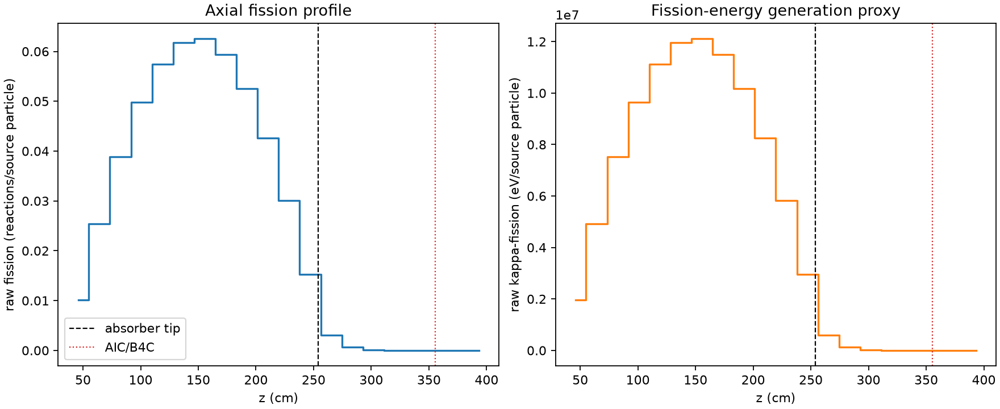
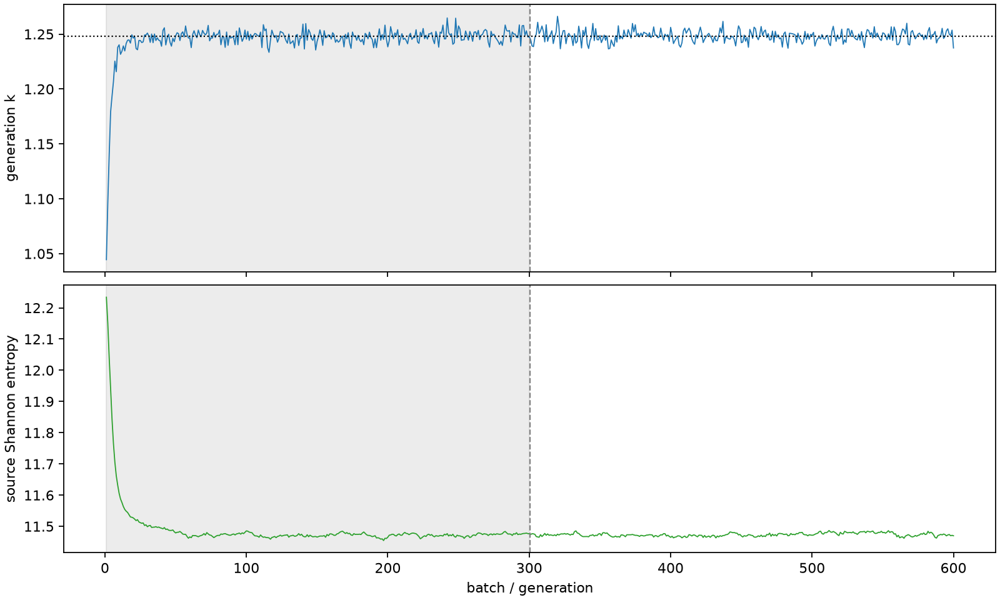

| field | value |
|---|---|
| experiment | V2-STAGE_256_OGRENCI_03-0025 |
| k | 1.2479756679524727 |
| MC standard error | 0.00018926883729543584 |
| seconds | 981.4343576579995 |
| acceptance | not_assessed |
| convergence | review_required |
Completed is output integrity only; physical and statistical review required. Zero tallies do not prove zero production or zero uncertainty.
| diagnostic | value |
|---|---|
| geometric fuel voxels | 5280 |
| zero fission tally voxels | 200 |
| low signal fuel voxels | 1304 |
| low signal fission share | 8.973227224273937e-05 |
| low signal kappa share | 8.976992165235571e-05 |
| important fission share | 0.9500941837710487 |
| previous filter included | 3976 |
| duration estimate s | 1562.5173488400023 |
| actual minus estimate s | -581.0829911820028 |
| fission relative MC error | statistics |
|---|---|
| all_geometric_fuel | {"voxels": 5280, "positive_mean_voxels": 5080, "zero_mean_voxels": 200, "undefined_relative_error_voxels": 200, "median": 0.010507072445678613, "p95": 0.9075040199724071, "maximum": 1.0000000000000002} |
| low_signal | {"voxels": 1304, "positive_mean_voxels": 1104, "zero_mean_voxels": 200, "undefined_relative_error_voxels": 200, "median": 0.5974466792764357, "p95": 1.0, "maximum": 1.0000000000000002} |
| important_95pct | {"voxels": 2706, "positive_mean_voxels": 2706, "zero_mean_voxels": 0, "undefined_relative_error_voxels": 0, "median": 0.00738233309844416, "p95": 0.010738631258833183, "maximum": 0.014664904284123264} |
| outside_previous_filter | {"voxels": 1304, "positive_mean_voxels": 1104, "zero_mean_voxels": 200, "undefined_relative_error_voxels": 200, "median": 0.5974466792764357, "p95": 1.0, "maximum": 1.0000000000000002} |
| kappa_fission relative MC error | statistics |
|---|---|
| all_geometric_fuel | {"voxels": 5280, "positive_mean_voxels": 5080, "zero_mean_voxels": 200, "undefined_relative_error_voxels": 200, "median": 0.010496211580534247, "p95": 0.9079657604476932, "maximum": 1.0000000000000002} |
| low_signal | {"voxels": 1304, "positive_mean_voxels": 1104, "zero_mean_voxels": 200, "undefined_relative_error_voxels": 200, "median": 0.5988687312287115, "p95": 1.0, "maximum": 1.0000000000000002} |
| important_95pct | {"voxels": 2706, "positive_mean_voxels": 2706, "zero_mean_voxels": 0, "undefined_relative_error_voxels": 0, "median": 0.007374666402450086, "p95": 0.010726689569228851, "maximum": 0.0146493530899711} |
| outside_previous_filter | {"voxels": 1304, "positive_mean_voxels": 1104, "zero_mean_voxels": 200, "undefined_relative_error_voxels": 200, "median": 0.5988687312287115, "p95": 1.0, "maximum": 1.0000000000000002} |
| axial bin | fission share | kappa-fission share |
|---|---|---|
| 1 | 0.01997369709236572 | 0.019974489213245142 |
| 2 | 0.04993079168037962 | 0.049930545914242945 |
| 3 | 0.07611782233726219 | 0.07611751796464257 |
| 4 | 0.09760085152338045 | 0.09760053866948715 |
| 5 | 0.11273105555463732 | 0.11273057267163739 |
| 6 | 0.12119045322995077 | 0.12118992988278857 |
| 7 | 0.12263834737692257 | 0.12263770721120758 |
| 8 | 0.11657683614769049 | 0.1165762054382844 |
| 9 | 0.10314681387168081 | 0.10314616902229637 |
| 10 | 0.0835393421078811 | 0.08353890982186658 |
| 11 | 0.05892603142245482 | 0.058925925997093294 |
| 12 | 0.0298972468672582 | 0.02989782438774721 |
| 13 | 0.006001150751849386 | 0.00600337381596876 |
| 14 | 0.0013274514878014333 | 0.001327998101964944 |
| 15 | 0.00030823192867160447 | 0.00030837429320147795 |
| 16 | 7.154083587724685e-05 | 7.157471950704534e-05 |
| 17 | 1.715833507230753e-05 | 1.7164758175249457e-05 |
| 18 | 3.5466418237462753e-06 | 3.547062916225789e-06 |
| 19 | 1.1038038396872726e-06 | 1.1042912515646375e-06 |
| 20 | 5.270032005381515e-07 | 5.267624753756604e-07 |
Histories include the inactive-to-active transition at batch 300. kappa-fission approximates fission energy production, not total heat deposition.

